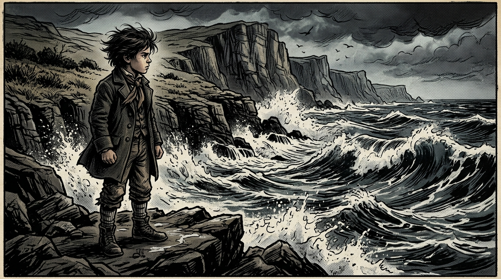
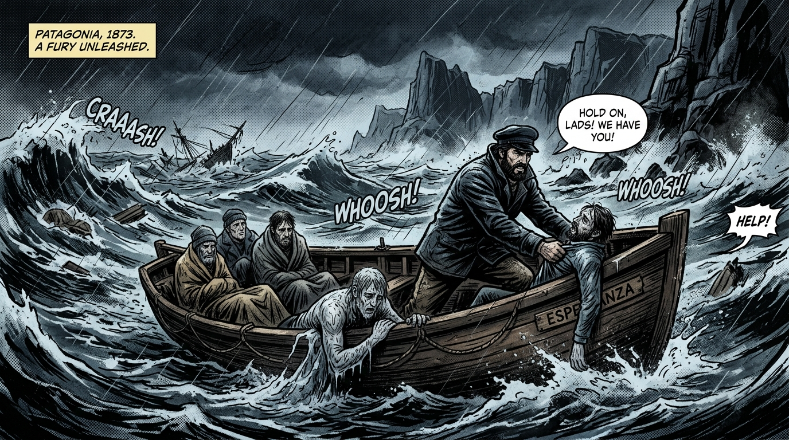
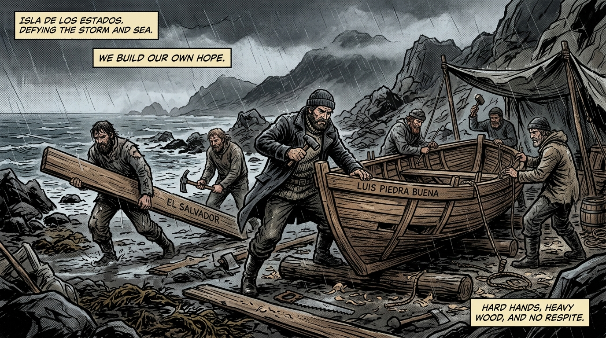
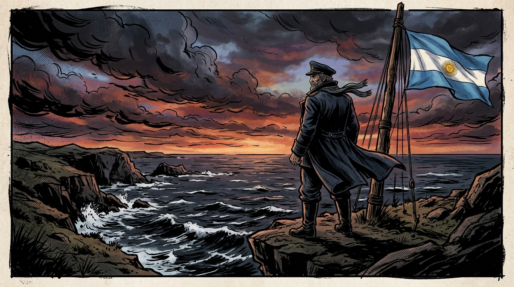

JUVENTUD EN LAS COSTAS DEL SUR
Carmen de Patagones (1843)
Carmen de Patagones, 1843. Frente al viento implacable y las olas de la Patagonia, el joven Luis contemplaba el mar con determinación inquebrantable. Allí juró consagrar su vida a la navegación y a la defensa del territorio austral.

"Estas aguas heladas son nuestra Patria... Ninguna tempestad ni potencia extranjera arrebatará la soberanía de nuestros mares."
— Luis Piedra Buena (12 años)FURIA EN EL CABO DE HORNOS
Rescate de Náufragos en el Atlántico Sur (1873)
Pasaje de Drake, 1873. Las tormentas antárticas destrozaban decenas de buques mercantes. Sin financiamiento estatal y movido únicamente por el deber humano, Piedra Buena patrullaba en auxilio de los náufragos.

"¡Resistan! ¡Mientras yo respire, ningún marino morirá desamparado en estas aguas!"
— Comandante Piedra BuenaLA HAZAÑA DE LA ISLA DE LOS ESTADOS
Construcción del Cúter "Cabo de Hornos" (1873)
Isla de los Estados, 1873. Un temporal feroz destruyó el cúter 'Espora'. Aislados en un territorio helado y desierto, la entereza de los marinos venció a la adversidad.

"Construiremos un nuevo barco con la madera del naufragio y nuestras propias manos. ¡Zarparemos de nuevo!"
— Luis Piedra BuenaLEYENDA Y GUARDIÁN ETERNO
Soberanía Argentina en el Atlántico Sur
San Juan de Salvamento & Isla Pavón. Su presencia permanente resguardó la soberanía nacional en la Patagonia austral e inspiró la famosa obra "El Faro del Fin del Mundo".

"La Patria no se declara en la distancia; se defiende navegando sus mares."
— Tte. Cnel. Don Luis Piedra BuenaARCHIVO DE SOBERANÍA PATAGÓNICA
Hitos y símbolos históricos del comandante Don Luis Piedra Buena
EL CÚTER ESPORA
Su legendaria embarcación con la que patrulló incesantemente los mares australes, auxiliando a marineros y reafirmando el pabellón nacional.
ISLA PAVÓN
Asentamiento estratégico fundado en el río Santa Cruz en 1859. Allí izó la bandera argentina y forjó una gran alianza con el cacique Casimiro Biguá.
FARO DE SALVAMENTO
Impulsó el refugio de San Juan de Salvamento en la Isla de los Estados, inspiración directa para la novela "El Faro del Fin del Mundo".